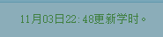
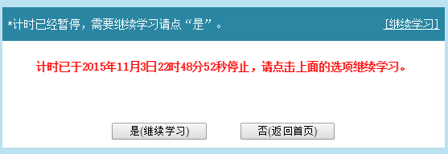
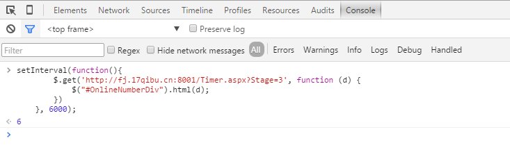
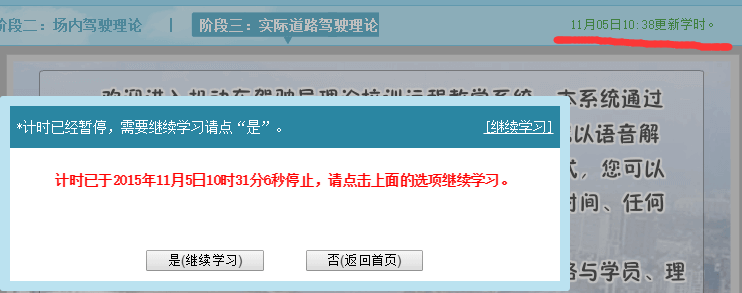
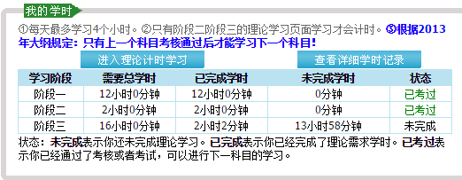

<!DOCTYPE html>


<html lang="en">


<head>
  <meta charset="utf-8" />
   
  <meta name="keywords" content="c,c++,java,python,leetcode,algorithm,reading,life,moods,machine-learning,data-mining,deep-learning,AI" />
   
  <meta name="description" content="一个分享机器学习、算法与数据结构，个人学习心得、读书笔记、生活的博客。" />
  
  <meta name="viewport" content="width=device-width, initial-scale=1, maximum-scale=1" />
  <title>
    剑走偏锋 福建驾考刷网上理论学时 无需20分钟点击方法 |  一个分享机器学习、算法与数据结构，个人学习心得、读书笔记、生活的博客。
  </title>
  <meta name="generator" content="hexo-theme-ayer">
  
  <link rel="shortcut icon" href="/favicon.ico" />
  
  
<link rel="stylesheet" href="/dist/main.css">

  
<link rel="stylesheet" href="https://cdn.jsdelivr.net/gh/Shen-Yu/cdn/css/remixicon.min.css">

  
<link rel="stylesheet" href="/css/custom.css">

  
  
<script src="https://cdn.jsdelivr.net/npm/pace-js@1.0.2/pace.min.js"></script>

  
  

  

<link href="https://cdn.bootcss.com/KaTeX/0.11.1/katex.min.css" rel="stylesheet" /></head>

</html>

<body>
  <div id="app">
    
      
    <main class="content on">
      <section class="outer">
  <article
  id="post-fujian-drive-license-online-study-time-20-minute-click-crack"
  class="article article-type-post"
  itemscope
  itemprop="blogPost"
  data-scroll-reveal
>
  <div class="article-inner">
    
    <header class="article-header">
       
<h1 class="article-title sea-center" style="border-left:0" itemprop="name">
  剑走偏锋 福建驾考刷网上理论学时 无需20分钟点击方法
</h1>
 

    </header>
     
    <div class="article-meta">
      <a href="/fujian-drive-license-online-study-time-20-minute-click-crack/" class="article-date">
  <time datetime="2015-11-03T15:26:18.000Z" itemprop="datePublished">2015-11-03</time>
</a> 
  <div class="article-category">
    <a class="article-category-link" href="/categories/%E6%8A%80%E6%9C%AF%E6%94%B9%E5%8F%98%E7%94%9F%E6%B4%BB/">技术改变生活</a>
  </div>
  
<div class="word_count">
    <span class="post-time">
        <span class="post-meta-item-icon">
            <i class="ri-quill-pen-line"></i>
            <span class="post-meta-item-text"> Word count:</span>
            <span class="post-count">1.3k</span>
        </span>
    </span>

    <span class="post-time">
        &nbsp; | &nbsp;
        <span class="post-meta-item-icon">
            <i class="ri-book-open-line"></i>
            <span class="post-meta-item-text"> Reading time≈</span>
            <span class="post-count">6 min</span>
        </span>
    </span>
</div>
 
    </div>
      
    <div class="tocbot"></div>


  
    <div class="article-entry" itemprop="articleBody">
       
  <p>今天水过科目二，=v= 100分~</p>
<p>教练让刷科三网上理论的学时，科二两小时的网上学时也就算了，科三16小时= =还要20分钟点击一次，考个驾照这么麻烦。。难道要挂个按键精灵？那我岂不是4小时不能动电脑= =</p>
<p>太low了，身为CS学生，当然要找直接粗暴一点=v=</p>
<a id="more"></a>
<p><strong>伸手党请直接拉到最下方看方法~</strong></p>
<h2 id="分析">分析</h2>
<p>直接查看其JS代码，很容易发现stage标示的是科目几，如科三是3，科二为2</p>
<figure class="highlight plain"><table><tr><td class="gutter"><pre><span class="line">1</span><br><span class="line">2</span><br><span class="line">3</span><br><span class="line">4</span><br><span class="line">5</span><br><span class="line">6</span><br><span class="line">7</span><br><span class="line">8</span><br><span class="line">9</span><br><span class="line">10</span><br><span class="line">11</span><br><span class="line">12</span><br><span class="line">13</span><br><span class="line">14</span><br><span class="line">15</span><br><span class="line">16</span><br><span class="line">17</span><br><span class="line">18</span><br><span class="line">19</span><br><span class="line">20</span><br><span class="line">21</span><br><span class="line">22</span><br><span class="line">23</span><br><span class="line">24</span><br><span class="line">25</span><br><span class="line">26</span><br><span class="line">27</span><br><span class="line">28</span><br><span class="line">29</span><br><span class="line">30</span><br><span class="line">31</span><br><span class="line">32</span><br><span class="line">33</span><br><span class="line">34</span><br></pre></td><td class="code"><pre><span class="line">$(&quot;#ChapterMenuDivOne1&quot;).click(function () &#123;</span><br><span class="line">      &#x2F;&#x2F;$.cookie(&#39;stlx&#39;, null);</span><br><span class="line">     &#x2F;&#x2F; $.cookie(&#39;jishi&#39;, &#39;False&#39;);</span><br><span class="line">      stage &#x3D; 1;</span><br><span class="line">      timer();</span><br><span class="line">      </span><br><span class="line">      $(&#39;body&#39;).stopTime(&#39;C&#39;);</span><br><span class="line">      </span><br><span class="line">  &#125;)</span><br><span class="line"></span><br><span class="line">  $(&quot;#ChapterMenuDivOne2&quot;).click(function () &#123;</span><br><span class="line">     &#x2F;&#x2F; $.cookie(&#39;stlx&#39;, null);</span><br><span class="line">     &#x2F;&#x2F; $.cookie(&#39;jishi&#39;, &#39;False&#39;);</span><br><span class="line">      stage &#x3D; 2;</span><br><span class="line">      timer(); &#x2F;&#x2F;先跑一次</span><br><span class="line">      fjTimer();</span><br><span class="line">      fj20();</span><br><span class="line">     &#x2F;&#x2F; window.frames[0].document.onkeydown &#x3D; kk;</span><br><span class="line">     &#x2F;&#x2F; window.frames[0].document.onmousedown &#x3D; kk;</span><br><span class="line">     </span><br><span class="line">  &#125;)</span><br><span class="line"></span><br><span class="line">  $(&quot;#ChapterMenuDivOne3&quot;).click(function () &#123;</span><br><span class="line">    &#x2F;&#x2F;  $.cookie(&#39;stlx&#39;, null);</span><br><span class="line">    &#x2F;&#x2F;  $.cookie(&#39;jishi&#39;, &#39;False&#39;);</span><br><span class="line">      stage &#x3D; 3;</span><br><span class="line">      timer(); &#x2F;&#x2F;先跑一次</span><br><span class="line">      fjTimer();</span><br><span class="line">      fj20();</span><br><span class="line">    &#x2F;&#x2F;  window.frames[0].document.onkeydown &#x3D; kk;</span><br><span class="line">    &#x2F;&#x2F;  window.frames[0].document.onmousedown &#x3D; kk;</span><br><span class="line">  &#125;)</span><br><span class="line"></span><br><span class="line"></span><br></pre></td></tr></table></figure>
<p>可以看到，科二和科三就差了stage - -</p>
<p>我们直接看科三的，调用了如下函数</p>
<ul>
<li>timer();</li>
<li>fjTimer();</li>
<li>fj20();</li>
</ul>
<p></p>
<p>**timer()**函数如下：</p>
<figure class="highlight plain"><table><tr><td class="gutter"><pre><span class="line">1</span><br><span class="line">2</span><br><span class="line">3</span><br><span class="line">4</span><br><span class="line">5</span><br><span class="line">6</span><br><span class="line">7</span><br><span class="line">8</span><br><span class="line">9</span><br></pre></td><td class="code"><pre><span class="line">function timer() &#123;</span><br><span class="line">        $.get(&quot;Timer.aspx?Stage&#x3D;&quot;+stage, function (d) &#123;</span><br><span class="line">            $(&quot;#OnlineNumberDiv&quot;).html(d);</span><br><span class="line">        &#125;)</span><br><span class="line">           .error(function () &#123;</span><br><span class="line">               $(&quot;#OnlineNumberDiv&quot;).html(&quot;&lt;b style&#x3D;&#39;color:red&#39;&gt;网络故障，请刷新页面！&lt;&#x2F;b&gt;&quot;);</span><br><span class="line">               &#x2F;&#x2F;location.href&#x3D;&#39;http:&#x2F;&#x2F;www.17qibu.cn&#39; </span><br><span class="line">           &#125;)</span><br><span class="line">    &#125;</span><br></pre></td></tr></table></figure>
<p>可以看出，这是个计算时间的函数，用get向服务器请求，然后 OnlineNumberDiv显示更新学时的时间，如下图</p>
<p>[</p>
<p>**fjTimer()**函数如下：</p>
<figure class="highlight plain"><table><tr><td class="gutter"><pre><span class="line">1</span><br><span class="line">2</span><br><span class="line">3</span><br><span class="line">4</span><br><span class="line">5</span><br><span class="line">6</span><br><span class="line">7</span><br><span class="line">8</span><br><span class="line">9</span><br></pre></td><td class="code"><pre><span class="line">function fjTimer() &#123;</span><br><span class="line">       if (isTimer &#x3D;&#x3D; 0) &#123;</span><br><span class="line">           $(&#39;body&#39;).stopTime(&#39;A&#39;);</span><br><span class="line">           $(&#39;body&#39;).everyTime(&#39;60s&#39;, &#39;A&#39;, function () &#123;</span><br><span class="line">               timer();</span><br><span class="line">           &#125;);</span><br><span class="line">           isTimer &#x3D; 1;</span><br><span class="line">       &#125;</span><br><span class="line">   &#125;</span><br></pre></td></tr></table></figure>
<p>每60S刷新一次timer()</p>
<p>**fj20()**函数如下：</p>
<figure class="highlight plain"><table><tr><td class="gutter"><pre><span class="line">1</span><br><span class="line">2</span><br><span class="line">3</span><br><span class="line">4</span><br><span class="line">5</span><br><span class="line">6</span><br><span class="line">7</span><br><span class="line">8</span><br><span class="line">9</span><br><span class="line">10</span><br><span class="line">11</span><br><span class="line">12</span><br><span class="line">13</span><br></pre></td><td class="code"><pre><span class="line">function fj20() &#123;</span><br><span class="line">        $(&#39;body&#39;).stopTime(&#39;C&#39;);</span><br><span class="line">      &#x2F;&#x2F;   if ($.cookie(&#39;jishi&#39;) &#x3D;&#x3D; &#39;True&#39;) &#123;</span><br><span class="line">       </span><br><span class="line">            $(&#39;body&#39;).oneTime(&#39;1810s&#39;, &#39;C&#39;, function () &#123;</span><br><span class="line">                $(&#39;body&#39;).stopTime(&#39;C&#39;);</span><br><span class="line">                &#x2F;&#x2F; $(&#39;body&#39;).stopTime(&#39;A&#39;);</span><br><span class="line">                &#x2F;&#x2F;弹出随堂练习题</span><br><span class="line">                fjDialog();</span><br><span class="line">            &#125;);</span><br><span class="line">            </span><br><span class="line">       &#x2F;&#x2F; &#125;</span><br><span class="line">    &#125;</span><br></pre></td></tr></table></figure>
<p>就是1810S后调用fjDialog();</p>
<p><strong>fjDialog();</strong> 如下</p>
<figure class="highlight plain"><table><tr><td class="gutter"><pre><span class="line">1</span><br><span class="line">2</span><br><span class="line">3</span><br><span class="line">4</span><br><span class="line">5</span><br><span class="line">6</span><br><span class="line">7</span><br><span class="line">8</span><br><span class="line">9</span><br><span class="line">10</span><br><span class="line">11</span><br><span class="line">12</span><br><span class="line">13</span><br><span class="line">14</span><br><span class="line">15</span><br><span class="line">16</span><br><span class="line">17</span><br><span class="line">18</span><br><span class="line">19</span><br><span class="line">20</span><br><span class="line">21</span><br><span class="line">22</span><br><span class="line">23</span><br><span class="line">24</span><br></pre></td><td class="code"><pre><span class="line"> function fjDialog() &#123;</span><br><span class="line">        var html &#x3D; &#39;&lt;p id&#x3D;&quot;stopTimeTips&quot;&gt;计时将在&lt;b style&#x3D;&quot;color:blue&quot; id&#x3D;&quot;remainTime&quot; &gt;加载中&lt;&#x2F;b&gt;后停止，请问是否需要继续学习？&lt;&#x2F;p&gt;&lt;br&#x2F;&gt;&lt;br&#x2F;&gt;&lt;br&#x2F;&gt;&#39;;</span><br><span class="line">        html +&#x3D; &quot;&lt;input type&#x3D;button value&#x3D;&#39;　是(继续学习)　&#39; onclick&#x3D;\&#39;startTimer()\&#39; &#x2F;&gt;　　　&quot;;</span><br><span class="line">                html +&#x3D; &#39;&lt;input type&#x3D;button value&#x3D;&quot;　否(返回首页)　&quot; onclick&#x3D;&quot;gotoIndex()&quot; &#x2F;&gt;&#39;;</span><br><span class="line">      &#x2F;&#x2F;  $.get(&quot;fj20.aspx?zhangjie&#x3D;&quot; + $.cookie(&#39;stlx&#39;) + &quot;&amp;r&#x3D;&quot; + Math.random(), function (html) &#123;</span><br><span class="line">           </span><br><span class="line">            bbq &#x3D; new Dialog(html);</span><br><span class="line">            bbq.show();</span><br><span class="line">      &#x2F;&#x2F;  &#125;);  </span><br><span class="line">&#x2F;&#x2F;        bbq &#x3D; new Dialog(html);</span><br><span class="line">&#x2F;&#x2F;        bbq.show();</span><br><span class="line"></span><br><span class="line">        &#x2F;&#x2F;计时倒计时&#x3D;&#x3D;&#x3D;&#x3D;&#x3D;&#x3D;&#x3D;&#x3D;&#x3D;&#x3D;&#x3D;&#x3D;&#x3D;&#x3D;&#x3D;&#x3D;&#x3D;&#x3D;&#x3D;&#x3D;&#x3D;&#x3D;&#x3D;&#x3D;&#x3D;</span><br><span class="line">        SysSecond &#x3D; 120; &#x2F;&#x2F;这里获取倒计时的起始时间 </span><br><span class="line">        $(&#39;body&#39;).stopTime(&#39;D&#39;);</span><br><span class="line">        $(&#39;body&#39;).everyTime(&#39;1s&#39;, &#39;D&#39;, function () &#123;</span><br><span class="line">            SetRemainTime();</span><br><span class="line">        &#125;);</span><br><span class="line">        &#x2F;&#x2F;InterValObj &#x3D; window.setInterval(SetRemainTime, 1000); &#x2F;&#x2F;间隔函数，1秒执行 </span><br><span class="line">        &#x2F;&#x2F;计时倒计时:end&#x3D;&#x3D;&#x3D;&#x3D;&#x3D;&#x3D;&#x3D;&#x3D;&#x3D;&#x3D;&#x3D;&#x3D;&#x3D;&#x3D;&#x3D;&#x3D;&#x3D;&#x3D;&#x3D;&#x3D;&#x3D;</span><br><span class="line"></span><br><span class="line">    &#125;</span><br><span class="line"></span><br><span class="line"></span><br></pre></td></tr></table></figure>
<p>就是弹出那个学时停止计时确认的对话框，如果120S不点击继续学习，则进行停止计时</p>
<figure class="highlight plain"><table><tr><td class="gutter"><pre><span class="line">1</span><br><span class="line">2</span><br><span class="line">3</span><br><span class="line">4</span><br><span class="line">5</span><br><span class="line">6</span><br><span class="line">7</span><br><span class="line">8</span><br><span class="line">9</span><br><span class="line">10</span><br><span class="line">11</span><br><span class="line">12</span><br><span class="line">13</span><br><span class="line">14</span><br><span class="line">15</span><br><span class="line">16</span><br><span class="line">17</span><br><span class="line">18</span><br><span class="line">19</span><br><span class="line">20</span><br><span class="line">21</span><br><span class="line">22</span><br><span class="line">23</span><br><span class="line">24</span><br></pre></td><td class="code"><pre><span class="line">function SetRemainTime() &#123;</span><br><span class="line">      if (SysSecond &gt; 0) &#123;</span><br><span class="line">          SysSecond &#x3D; SysSecond - 1;</span><br><span class="line">          var second &#x3D; Math.floor(SysSecond % 60);             &#x2F;&#x2F; 计算秒     </span><br><span class="line">          var minite &#x3D; Math.floor((SysSecond &#x2F; 60) % 60);      &#x2F;&#x2F;计算分 </span><br><span class="line"></span><br><span class="line">          $(&quot;#remainTime&quot;).html(minite + &quot;分&quot; + second + &quot;秒&quot;);</span><br><span class="line">      &#125; else &#123;</span><br><span class="line">          timer();</span><br><span class="line">          $(&#39;body&#39;).stopTime(&#39;D&#39;);</span><br><span class="line">          $(&#39;body&#39;).stopTime(&#39;A&#39;);</span><br><span class="line">          isTimer &#x3D; 0;</span><br><span class="line">          $(&#39;body&#39;).stopTime(&#39;C&#39;);</span><br><span class="line">          if (stage &#x3D;&#x3D; 2) &#123;</span><br><span class="line">              $(&quot;#stopTimeTips&quot;).html(&quot;&lt;b style&#x3D;&#39;color:red&#39;&gt;计时已于&quot; + currentTime() + &quot;停止，若需继续学习请点击“是”&lt;&#x2F;b&gt;&quot;);</span><br><span class="line">          &#125;</span><br><span class="line">          else &#123;</span><br><span class="line">              $(&quot;#stopTimeTips&quot;).html(&quot;&lt;b style&#x3D;&#39;color:red&#39;&gt;计时已于&quot; + currentTime() + &quot;停止，请点击上面的选项继续学习。&lt;&#x2F;b&gt;&quot;);</span><br><span class="line">          &#125;</span><br><span class="line"></span><br><span class="line">      &#125;</span><br><span class="line">  &#125;</span><br><span class="line"></span><br><span class="line"></span><br></pre></td></tr></table></figure>
<p>效果如图</p>
<p>[</p>
<p>从上面的分析中得出结论，timer()函数用于计时，而它是用get方法向/Timer.aspx?Stage=3刷新计时时间的。</p>
<p>那么，如果我们直接向这个发送请求呢？答案是可行的，请看下面的方法</p>
<h2 id="方法">方法</h2>
<p>打开chrome浏览器，访问科三的学习页面，按F12，打开控制台，输入如下代码，回车即可。</p>
<figure class="highlight plain"><table><tr><td class="gutter"><pre><span class="line">1</span><br><span class="line">2</span><br><span class="line">3</span><br><span class="line">4</span><br><span class="line">5</span><br></pre></td><td class="code"><pre><span class="line">setInterval(function()&#123;</span><br><span class="line">$.get(&#39;http:&#x2F;&#x2F;fj.17qibu.cn:8001&#x2F;Timer.aspx?Stage&#x3D;3&#39;, function (d) &#123;</span><br><span class="line">            $(&quot;#OnlineNumberDiv&quot;).html(d);</span><br><span class="line">        &#125;)</span><br><span class="line">&#125;, 6000);</span><br></pre></td></tr></table></figure>
<p>如图</p>
<p></p>
<p>PS：</p>
<ul>
<li>这个方法并不会阻止弹窗说停止计时，但无视就好=v=,还是会继续计时的。</li>
<li><strong>如果是科目二，那么把Stage=3改为Stage=2</strong></li>
<li>每天只能挂4个小时，这是硬性限制= =</li>
<li>有控制台的能跑JS的浏览器就行，不一定得chrome</li>
<li>2015.11.05 update code:使得能直接在网页上显示更新的学时</li>
</ul>
<p>[</p>
<p>可以在我的学时中查看详细学时记录，会发现还是计时的。</p>
<p>[</p>
<h2 id="小结">小结</h2>
<p>本来是想要python 直接上模拟登陆和提交- -没想到计时的机制这么简单~</p>
 
      <!-- reward -->
      
      <div id="reword-out">
        <div id="reward-btn">
          Donate
        </div>
      </div>
      
    </div>
    

    <!-- copyright -->
    
    <div class="declare">
      <ul class="post-copyright">
        <li>
          <i class="ri-copyright-line"></i>
          <strong>Copyright： </strong>
          
          Copyright is owned by the author. For commercial reprints, please contact the author for authorization. For non-commercial reprints, please indicate the source.
          
        </li>
      </ul>
    </div>
    
    <footer class="article-footer">
       
<div class="share-btn">
      <span class="share-sns share-outer">
        <i class="ri-share-forward-line"></i>
        分享
      </span>
      <div class="share-wrap">
        <i class="arrow"></i>
        <div class="share-icons">
          
          <a class="weibo share-sns" href="javascript:;" data-type="weibo">
            <i class="ri-weibo-fill"></i>
          </a>
          <a class="weixin share-sns wxFab" href="javascript:;" data-type="weixin">
            <i class="ri-wechat-fill"></i>
          </a>
          <a class="qq share-sns" href="javascript:;" data-type="qq">
            <i class="ri-qq-fill"></i>
          </a>
          <a class="douban share-sns" href="javascript:;" data-type="douban">
            <i class="ri-douban-line"></i>
          </a>
          <!-- <a class="qzone share-sns" href="javascript:;" data-type="qzone">
            <i class="icon icon-qzone"></i>
          </a> -->
          
          <a class="facebook share-sns" href="javascript:;" data-type="facebook">
            <i class="ri-facebook-circle-fill"></i>
          </a>
          <a class="twitter share-sns" href="javascript:;" data-type="twitter">
            <i class="ri-twitter-fill"></i>
          </a>
          <a class="google share-sns" href="javascript:;" data-type="google">
            <i class="ri-google-fill"></i>
          </a>
        </div>
      </div>
</div>

<div class="wx-share-modal">
    <a class="modal-close" href="javascript:;"><i class="ri-close-circle-line"></i></a>
    <p>扫一扫，分享到微信</p>
    <div class="wx-qrcode">
      
    </div>
</div>

<div id="share-mask"></div>  
  <ul class="article-tag-list" itemprop="keywords"><li class="article-tag-list-item"><a class="article-tag-list-link" href="/tags/Cool/" rel="tag">Cool</a></li><li class="article-tag-list-item"><a class="article-tag-list-link" href="/tags/Javascript/" rel="tag">Javascript</a></li></ul>

    </footer>
  </div>

   
  <nav class="article-nav">
    
      <a href="/leetcode-bulls-and-cows/" class="article-nav-link">
        <strong class="article-nav-caption">上一篇</strong>
        <div class="article-nav-title">
          
            leetcode Bulls and Cows
          
        </div>
      </a>
    
    
      <a href="/leetcode-longest-increasing-subsequence/" class="article-nav-link">
        <strong class="article-nav-caption">下一篇</strong>
        <div class="article-nav-title">leetcode Longest Increasing Subsequence</div>
      </a>
    
  </nav>

   
<!-- valine评论 -->
<div id="vcomments-box">
  <div id="vcomments"></div>
</div>
<script src="//cdn1.lncld.net/static/js/3.0.4/av-min.js"></script>
<script src="https://cdn.jsdelivr.net/npm/valine@1.4.14/dist/Valine.min.js"></script>
<script>
  new Valine({
    el: "#vcomments",
    app_id: "fVcjWMD8aI6F0qEfKdUaHa4f-gzGzoHsz",
    app_key: "b26lBsbwmVyxTSnNrsBrnv3U",
    path: window.location.pathname,
    avatar: "monsterid",
    placeholder: "给我的文章加点评论吧~",
    recordIP: true,
  });
  const infoEle = document.querySelector("#vcomments .info");
  if (infoEle && infoEle.childNodes && infoEle.childNodes.length > 0) {
    infoEle.childNodes.forEach(function (item) {
      item.parentNode.removeChild(item);
    });
  }
</script>
<style>
  #vcomments-box {
    padding: 5px 30px;
  }

  @media screen and (max-width: 800px) {
    #vcomments-box {
      padding: 5px 0px;
    }
  }

  #vcomments-box #vcomments {
    background-color: #fff;
  }

  .v .vlist .vcard .vh {
    padding-right: 20px;
  }

  .v .vlist .vcard {
    padding-left: 10px;
  }
</style>

 
     
</article>

</section>
      <footer class="footer">
  <div class="outer">
    <ul>
      <li>
        Copyrights &copy;
        2013-2020
        <i class="ri-heart-fill heart_icon"></i> hrwhisper
      </li>
    </ul>
    <ul>
      <li>
        
        
        
        Powered by <a href="https://hexo.io" target="_blank">Hexo</a>
        <span class="division">|</span>
        Theme - <a href="https://github.com/Shen-Yu/hexo-theme-ayer" target="_blank">Ayer</a>
        
      </li>
    </ul>
    <ul>
      <li>
        
        
        <span>
  <span><i class="ri-user-3-fill"></i>Visitors:<span id="busuanzi_value_site_uv"></span></s>
  <span class="division">|</span>
  <span><i class="ri-eye-fill"></i>Views:<span id="busuanzi_value_page_pv"></span></span>
</span>
        
      </li>
    </ul>
    <ul>
      
    </ul>
    <ul>
      
    </ul>
    <ul>
      <li>
        <!-- cnzz统计 -->
        
      </li>
    </ul>
  </div>
</footer>
      <div class="float_btns">
        <div class="totop" id="totop">
  <i class="ri-arrow-up-line"></i>
</div>

<div class="todark" id="todark">
  <i class="ri-moon-line"></i>
</div>

      </div>
    </main>
    <aside class="sidebar on">
      <button class="navbar-toggle"></button>
<nav class="navbar">
  
  <div class="logo">
    <a href="/"></a>
  </div>
  
  <ul class="nav nav-main">
    
    <li class="nav-item">
      <a class="nav-item-link" href="/">主页</a>
    </li>
    
    <li class="nav-item">
      <a class="nav-item-link" href="/archives">归档</a>
    </li>
    
    <li class="nav-item">
      <a class="nav-item-link" href="/categories">分类</a>
    </li>
    
    <li class="nav-item">
      <a class="nav-item-link" href="/tags">标签</a>
    </li>
    
    <li class="nav-item">
      <a class="nav-item-link" href="/blog-building">博客建设</a>
    </li>
    
    <li class="nav-item">
      <a class="nav-item-link" href="/friend-link">友链</a>
    </li>
    
    <li class="nav-item">
      <a class="nav-item-link" href="/leetcode-algorithm-solution">leetcode题解</a>
    </li>
    
    <li class="nav-item">
      <a class="nav-item-link" href="/messageboard">留言板</a>
    </li>
    
    <li class="nav-item">
      <a class="nav-item-link" href="/about-me">关于我</a>
    </li>
    
  </ul>
</nav>
<nav class="navbar navbar-bottom">
  <ul class="nav">
    <li class="nav-item">
      
      <a class="nav-item-link nav-item-search"  title="Search">
        <i class="ri-search-line"></i>
      </a>
      
      
    </li>
  </ul>
</nav>
<div class="search-form-wrap">
  <div class="local-search local-search-plugin">
  <input type="search" id="local-search-input" class="local-search-input" placeholder="Search...">
  <div id="local-search-result" class="local-search-result"></div>
</div>
</div>
    </aside>
    <script>
      if (window.matchMedia("(max-width: 768px)").matches) {
        document.querySelector('.content').classList.remove('on');
        document.querySelector('.sidebar').classList.remove('on');
      }
    </script>
    <div id="mask"></div>

<!-- #reward -->
<div id="reward">
  <span class="close"><i class="ri-close-line"></i></span>
  <p class="reward-p"><i class="ri-cup-line"></i>请我喝杯咖啡吧~</p>
  <div class="reward-box">
    
    <div class="reward-item">
      
      <span class="reward-type">支付宝</span>
    </div>
    
    
    <div class="reward-item">
      
      <span class="reward-type">微信</span>
    </div>
    
  </div>
</div>
    
<script src="/js/jquery-2.0.3.min.js"></script>


<script src="/js/lazyload.min.js"></script>

<!-- Tocbot -->


<script src="/js/tocbot.min.js"></script>

<script>
  tocbot.init({
    tocSelector: '.tocbot',
    contentSelector: '.article-entry',
    headingSelector: 'h1, h2, h3',
    hasInnerContainers: true,
    scrollSmooth: false,
	scrollSmoothDuration: 420,
    scrollContainer: 'main',
    positionFixedSelector: '.tocbot',
    positionFixedClass: 'is-position-fixed',
    fixedSidebarOffset: 'auto',
	collapseDepth: 2,
  });
</script>

<script src="https://cdn.jsdelivr.net/npm/jquery-modal@0.9.2/jquery.modal.min.js"></script>
<link rel="stylesheet" href="https://cdn.jsdelivr.net/npm/jquery-modal@0.9.2/jquery.modal.min.css">
<script src="https://cdn.jsdelivr.net/npm/justifiedGallery@3.7.0/dist/js/jquery.justifiedGallery.min.js"></script>

<script src="/dist/main.js"></script>

<!-- ImageViewer -->

<!-- Root element of PhotoSwipe. Must have class pswp. -->
<div class="pswp" tabindex="-1" role="dialog" aria-hidden="true">

    <!-- Background of PhotoSwipe. 
         It's a separate element as animating opacity is faster than rgba(). -->
    <div class="pswp__bg"></div>

    <!-- Slides wrapper with overflow:hidden. -->
    <div class="pswp__scroll-wrap">

        <!-- Container that holds slides. 
            PhotoSwipe keeps only 3 of them in the DOM to save memory.
            Don't modify these 3 pswp__item elements, data is added later on. -->
        <div class="pswp__container">
            <div class="pswp__item"></div>
            <div class="pswp__item"></div>
            <div class="pswp__item"></div>
        </div>

        <!-- Default (PhotoSwipeUI_Default) interface on top of sliding area. Can be changed. -->
        <div class="pswp__ui pswp__ui--hidden">

            <div class="pswp__top-bar">

                <!--  Controls are self-explanatory. Order can be changed. -->

                <div class="pswp__counter"></div>

                <button class="pswp__button pswp__button--close" title="Close (Esc)"></button>

                <button class="pswp__button pswp__button--share" style="display:none" title="Share"></button>

                <button class="pswp__button pswp__button--fs" title="Toggle fullscreen"></button>

                <button class="pswp__button pswp__button--zoom" title="Zoom in/out"></button>

                <!-- Preloader demo http://codepen.io/dimsemenov/pen/yyBWoR -->
                <!-- element will get class pswp__preloader--active when preloader is running -->
                <div class="pswp__preloader">
                    <div class="pswp__preloader__icn">
                        <div class="pswp__preloader__cut">
                            <div class="pswp__preloader__donut"></div>
                        </div>
                    </div>
                </div>
            </div>

            <div class="pswp__share-modal pswp__share-modal--hidden pswp__single-tap">
                <div class="pswp__share-tooltip"></div>
            </div>

            <button class="pswp__button pswp__button--arrow--left" title="Previous (arrow left)">
            </button>

            <button class="pswp__button pswp__button--arrow--right" title="Next (arrow right)">
            </button>

            <div class="pswp__caption">
                <div class="pswp__caption__center"></div>
            </div>

        </div>

    </div>

</div>

<link rel="stylesheet" href="https://cdn.jsdelivr.net/npm/photoswipe@4.1.3/dist/photoswipe.min.css">
<link rel="stylesheet" href="https://cdn.jsdelivr.net/npm/photoswipe@4.1.3/dist/default-skin/default-skin.min.css">
<script src="https://cdn.jsdelivr.net/npm/photoswipe@4.1.3/dist/photoswipe.min.js"></script>
<script src="https://cdn.jsdelivr.net/npm/photoswipe@4.1.3/dist/photoswipe-ui-default.min.js"></script>

<script>
    function viewer_init() {
        let pswpElement = document.querySelectorAll('.pswp')[0];
        let $imgArr = document.querySelectorAll(('.article-entry img:not(.reward-img)'))

        $imgArr.forEach(($em, i) => {
            $em.onclick = () => {
                // slider展开状态
                // todo: 这样不好，后面改成状态
                if (document.querySelector('.left-col.show')) return
                let items = []
                $imgArr.forEach(($em2, i2) => {
                    let img = $em2.getAttribute('data-idx', i2)
                    let src = $em2.getAttribute('data-target') || $em2.getAttribute('src')
                    let title = $em2.getAttribute('alt')
                    // 获得原图尺寸
                    const image = new Image()
                    image.src = src
                    items.push({
                        src: src,
                        w: image.width || $em2.width,
                        h: image.height || $em2.height,
                        title: title
                    })
                })
                var gallery = new PhotoSwipe(pswpElement, PhotoSwipeUI_Default, items, {
                    index: parseInt(i)
                });
                gallery.init()
            }
        })
    }
    viewer_init()
</script>

<!-- MathJax -->

<script type="text/x-mathjax-config">
  MathJax.Hub.Config({
      tex2jax: {
          inlineMath: [ ['$','$'], ["\\(","\\)"]  ],
          processEscapes: true,
          skipTags: ['script', 'noscript', 'style', 'textarea', 'pre', 'code']
      }
  });

  MathJax.Hub.Queue(function() {
      var all = MathJax.Hub.getAllJax(), i;
      for(i=0; i < all.length; i += 1) {
          all[i].SourceElement().parentNode.className += ' has-jax';
      }
  });
</script>

<script src="https://cdn.jsdelivr.net/npm/mathjax@2.7.6/unpacked/MathJax.js?config=TeX-AMS-MML_HTMLorMML"></script>
<script>
  var ayerConfig = {
    mathjax: true
  }
</script>

<!-- Katex -->

<!-- busuanzi  -->


<script src="/js/busuanzi-2.3.pure.min.js"></script>


<!-- ClickLove -->

<!-- ClickBoom1 -->

<!-- ClickBoom2 -->

<!-- CodeCopy -->


<link rel="stylesheet" href="/css/clipboard.css">

<script src="https://cdn.jsdelivr.net/npm/clipboard@2/dist/clipboard.min.js"></script>
<script>
  function wait(callback, seconds) {
    var timelag = null;
    timelag = window.setTimeout(callback, seconds);
  }
  !function (e, t, a) {
    var initCopyCode = function(){
      var copyHtml = '';
      copyHtml += '<button class="btn-copy" data-clipboard-snippet="">';
      copyHtml += '<i class="ri-file-copy-2-line"></i><span>COPY</span>';
      copyHtml += '</button>';
      $(".highlight .code pre").before(copyHtml);
      $(".article pre code").before(copyHtml);
      var clipboard = new ClipboardJS('.btn-copy', {
        target: function(trigger) {
          return trigger.nextElementSibling;
        }
      });
      clipboard.on('success', function(e) {
        let $btn = $(e.trigger);
        $btn.addClass('copied');
        let $icon = $($btn.find('i'));
        $icon.removeClass('ri-file-copy-2-line');
        $icon.addClass('ri-checkbox-circle-line');
        let $span = $($btn.find('span'));
        $span[0].innerText = 'COPIED';
        
        wait(function () { // 等待两秒钟后恢复
          $icon.removeClass('ri-checkbox-circle-line');
          $icon.addClass('ri-file-copy-2-line');
          $span[0].innerText = 'COPY';
        }, 2000);
      });
      clipboard.on('error', function(e) {
        e.clearSelection();
        let $btn = $(e.trigger);
        $btn.addClass('copy-failed');
        let $icon = $($btn.find('i'));
        $icon.removeClass('ri-file-copy-2-line');
        $icon.addClass('ri-time-line');
        let $span = $($btn.find('span'));
        $span[0].innerText = 'COPY FAILED';
        
        wait(function () { // 等待两秒钟后恢复
          $icon.removeClass('ri-time-line');
          $icon.addClass('ri-file-copy-2-line');
          $span[0].innerText = 'COPY';
        }, 2000);
      });
    }
    initCopyCode();
  }(window, document);
</script>


<!-- CanvasBackground -->


    
  </div>
</body>

</html>